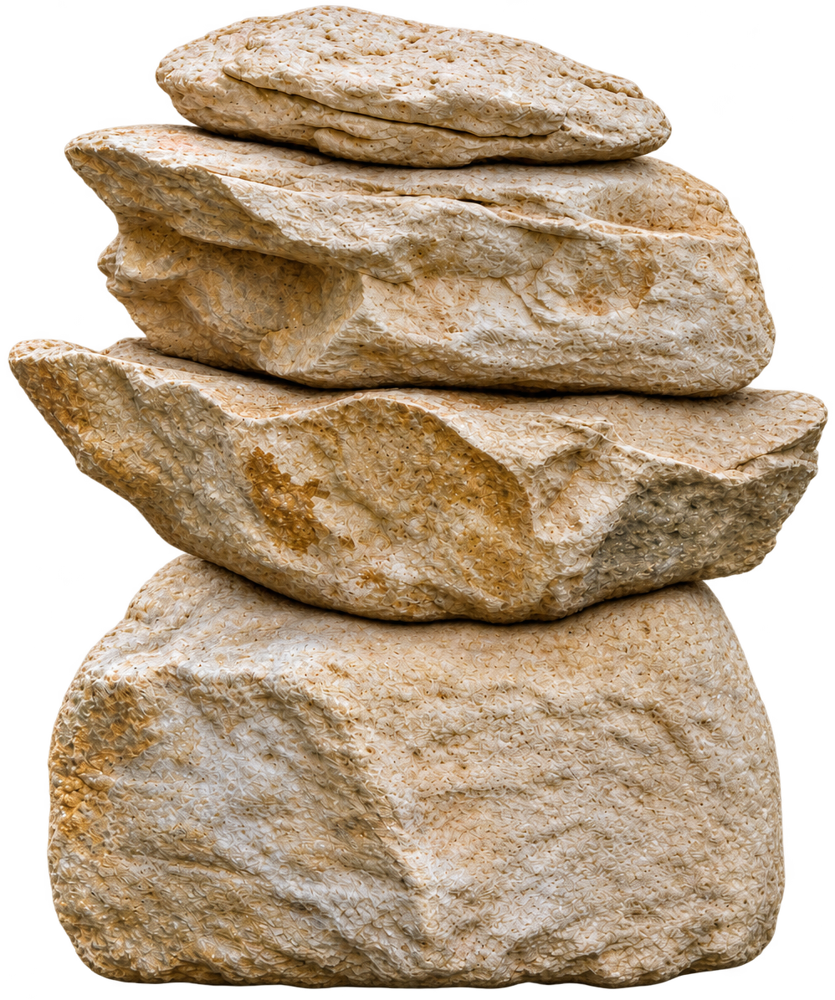

Investment opportunities
OS
Participation in the brand, membership program, shared infrastructure or individual technology ventures.
Sicily Prime
Real estate and the assets held by the S.p.A. Primary share issues or secondary share sales.
Projects
Direct participation in an individual real estate development or OpCo: villas, hotel, agriculture, school or spa.
Working together
Translate the Meta into the OS. Build a brand that turns the project into an international destination. Connect a network of communities, grow a community with its own membership program, and develop the OS as an investable startup opportunity.
Motivation ↓Motivation
I would like to join this venture as Creative Director & Curator, building it with you from the very beginning: a brand, an international destination that is culturally relevant, contemporary, investable.
Role
At its core, my work is creative strategy: taking the discourse on the meta level, making it physically accessible through every layer. At company level, I shape the brand, its communication as well as its tech stack. I co-develop the company's operating system into an investable case.
In the early phase, I also want to work closely on the projects themselves: scouting places with the core team, imagining what they could become, shaping the first project cases. This shared process of dreaming, of co-creation, is where the brand begins.
Collaboration
At the beginning, I work closely with the core team: mapping, co-creating, setting the direction. Over time, I take ownership of clearly defined areas in which I hold creative authority.
As a strategist, I build structures that empower others. With producers such as Boris, I act as a creative counterpart while setting the frame. As new partners, producers or communities join, I ensure their work integrates with the brand, keeping it consistent.
I bring a network built over many years: communities, artists, creatives, developers, designers, as well as people building in tech, crypto or new forms of participation.
What drives me
Building meaningful, visionary communities is at the heart of my personal mission. I have built communities before in London, Los Angeles and Switzerland. Being part of one, bringing my own community into it, is central to how I live. I want to experience change first-hand, to prototype new ways of living, to help lead transformative change in society. This project is a place to do exactly that.
Before committing
I see this as a shared adventure I would love to go on with you. Before I can fully commit, I need to know what the deal is:
- Timing Are we starting now, visiting Sicily to see the spaces, with the work beginning next year? Or is this a longer-term plan?
- Role Would I begin as creative consultant on a trial basis, moving into a partnership later? Or join as creative partner from the outset?
- Equity As a partner, in which entity would I hold equity, to what extent?
- Compensation Will the work be paid, on what basis, from when?